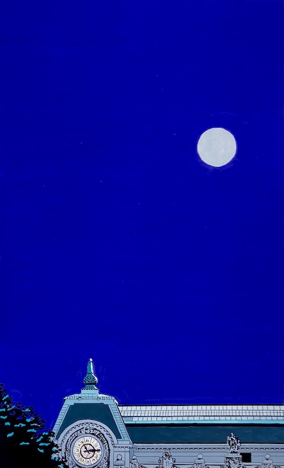
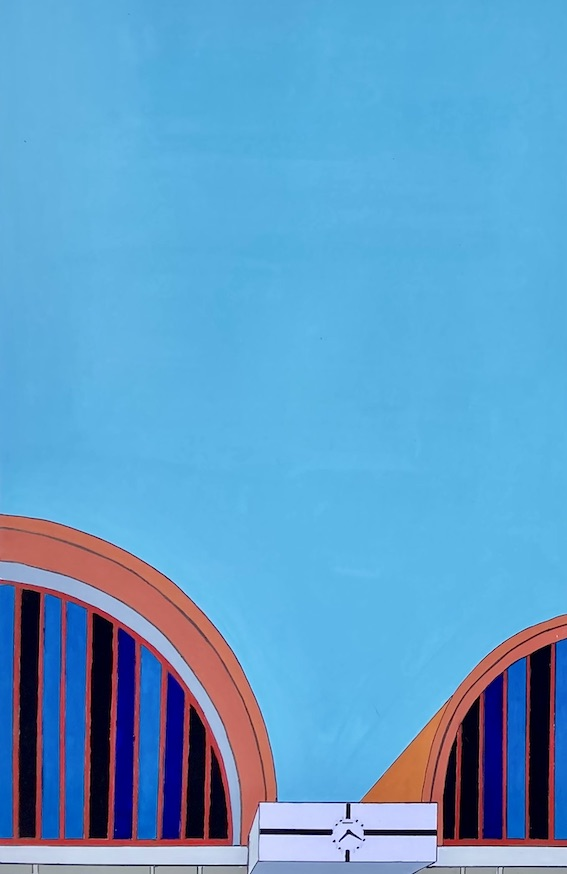

Sud-Express
Dans le compartiment il y a un monsieur espagnol, élégance désuète, cheveux teints, un genre de Zorro vieilli qui entretient sa moustache. Il y a aussi un jeune Anglais, à peu près mon âge. Et puis un couple, tous deux français, mais elle sans doute d’origine espagnole, pas très enjoués, la mine fermée, on peut se dire qu’ils vont à Madrid assister à un enterrement ou à un événement déplaisant, mais ils s’aiment, se tiennent la main. Nous sommes cinq. Une couchette restera inoccupée.

Lorsque le train quitte la gare d’Austerlitz, coups de sifflets, il s’enfonce dans une nuit brumeuse, février, où les lumières des villes traversées sont floues.
Être l’enfant à sa fenêtre et regarder passer le train.
Puis, après le banlieue, presque plus rien, le noir des campagnes.
Le monsieur espagnol a envie de parler. Alors il me tombe dessus, car l’Anglais ne parle ni français ni espagnol et les amoureux chuchotent. Il est représentant de commerce en chaussures de belle confection, donc il me parle de chaussures, pieds, talons, semelles, cuirs, boucles, en français. Indifférent quant à moi au sujet des chaussures, ce qu’il constate par lui-même en jetant un coup d’œil à mes vieilles Clarks, je l’écoute par politesse, jusqu’à une péroraison sur les mocassins, son modèle phare. Je m’échappe.
Je sors dans le couloir pour fumer. Je trouve un autre fumeur, du compartiment voisin. Un gars de vingt-cinq ou trente ans, j’évalue mal dans la lumière un peu faible. Il me sourit, puis me parle.
La lune éclaire le paysage qui défile côté couloir. Elle est parfaite dans la nuit, très en hauteur.
– C’est la pleine lune, dis-je. Nous allons mal dormir.
Mon nouvel ami fumeur ne croit pas à l’influence de la lune. À la lune, aux paysages, aux souvenirs d’autres voyages, au sommeil dans les trains, les voitures, les avions ou les métros, il préfère la politique. Il me lance sur des sujets dont je ne sais rien et sur lesquels il semble en savoir beaucoup. Je finis par me taire, car je ne sais rien, et je le regarde parler, la fumée sortant de sa bouche, blanchie par la lune, sa peau sans imperfection, ses sourcils blonds et ses yeux enflammés par les idées.
– Je suis communiste, dit-il.
– Ah d’accord, je fais, sans savoir pourquoi.
– Mais pas communiste au sens du Parti communiste.
– Ah d’accord, je répète, toujours sans savoir pourquoi.
Toutes les internationales communistes ne se valent pas, il ne faut pas se tromper. Et là, bien sûr, nous parlons de la guerre d’Espagne, de Franco, de Staline, des anarchistes et de George Orwell. Mais pas de Malraux.
Je fume trois cigarettes, lui deux. La flamme de son briquet révèle une petite cicatrice sur le menton.
À minuit passé nous allons nous coucher. Mon compartiment est plongé dans noir, tout le monde dort ou fait semblant. Mon petit sac à dos a été laissé près de la porte, comme pour me dire de le récupérer. Les deux couchettes du haut son libres, je me hisse sur celle de droite. J’allume la loupiote et farfouille dans mon sac pour y trouver ma bouteille d’eau. Je la trouve, mais en poussant la fouille, je constate la disparition du mon portefeuille avec mes papiers et mon argent. Je vide le sac, un vrai bazar, plus de portefeuille. Je panique. Puis, reprenant mes esprits, je raisonne : il n’y a qu’une explication, quelqu’un a volé mon portefeuille et ce quelqu’un se trouve dans le compartiment. Le monsieur espagnol à la moustache de Zorro est-il vraiment représentant de commerce en chaussures ? Le couple est-il aussi triste et amoureux qu’il en a l’air ? Et le jeune Anglais, justement il est jeune et anglais.
Pas de raffut en pleine nuit. Je décide d’attendre le matin. Je ferai appel au contrôleur. Le voleur sera confondu. Il ne peut aller nulle part. J’éteins ma loupiote et ferme les yeux.
Mon nouvel ami communiste se lève tôt. Quand j’entre dans le wagon restaurant pour le petit déjeuner, il est attablé devant une tasse de café et des croissants. Je m’assois en face lui.
Le wagon est en bois, d’un autre temps. Derrière les vitres entourées de moulures vernies défile le plateau central de la péninsule ibérique, étendue pierreuse parsemée d’herbes jaune, où affleure parfois une maison, presqu’inaperçue parce qu’elle est faite de la même pierre que le sol. Le tout sous un ciel d’un bleu très clair qui laisse deviner le froid régnant à l’extérieur. Je me sens bien dans cet intérieur de bois verni, à boire du café dans une tasse de porcelaine, mon ami communiste devant moi, les yeux encore gonflés de sommeil, et qui, ce matin, se fait taiseux.
– Bien dormi ?
– Bof.
Dans son compartiment, il y avait deux bavards nocturnes qui l’on dérangé. Il a bouquiné une partie de la nuit.
– Tu lis quoi ?
Il ne répond pas. Peut-être lit-il un roman américain. Je voudrais le taquiner mais il a l’air sérieux. Je ne distingue plus la cicatrice sur son menton et ses sourcils paraissent moins blonds. La barbe affleure sur les joues et autour de la bouche.
– Et toi, bien dormi ?
– On m’a volé mon portefeuille.
Je rassemble quelques miettes de croissant dispersées sur la nappe blanche, puis du bout des doigts les met dans mon assiette. Nous reprenons une tasse de café. Le bois du wagon grince, comme les lattes d’un vieux parquet quand on marche dessus.
Un village apparaît dehors, quelques arbres verts autour, oasis à l’espagnol. Puis le train amorce une légère descente.
– Qui ça ?
– Je ne sais pas exactement. Peut-être un Anglais.
– Tu veux que je lui parle ?
– Tu parles bien anglais ?
La campagne prend fin abruptement. Les premières maisons apparaissent, un quartier entier, des rues, des immeubles, des avenues, derrière l’entrelacs des voies.
Ralentissement et sifflement des freins. Après quinze heures de voyage, nous arrivons. Je descends sur le quai avec mon sac. Ja palpe ma poche de pantalon pour vérifier que mon portefeuille, retrouvé on the ground, s’y trouve bien. Des voutes en béton cache le ciel.
Je passe devant un petit bureau, porte vitrée, il y a un portrait du roi accroché au mur.
Avec mon nouvel ami communiste, j’irai voir Guernica, au Prado, dans le pavillon où il est exposé depuis peu. Nous le contemplerons ensemble, sans trop parler, puis il me donnera quelques explication, car je ne sais rien. Après nous boirons un café et nous fumerons. Et puis je ne le reverrai jamais.
Être communiste et passer d’une rive à l’autre.

Des années plus tard je regarde au musée d’Orsay le Clair de lune sur le port de Boulogne d’Edouard Manet.
Puis, dans la galerie centrale, je lève les yeux vers la voute en verrière d’où descend une lumière blanche. La lune sur le port de Boulogne, on dit qu’elle fut peinte dans la nuit du 3 au 4 août 1868. Combien de cigarettes ai-je fumé avec mon ami communiste qui parlait si bien anglais ? Alors je ne connaissais rien des frères Cambon sur lesquels j’écris maintenant une thèse. Mais le chemin qui ma conduit jusqu’à eux doit remonter ce voyage en train de nuit, lorsque j’ai emprunté, sans rien savoir, l’héritier du Sud-Express, mis en service en 1886. Le train partait alors de la gare d’Orléans à 10 heures 25 du soir. Il arrivait à Bordeaux à 7 heures du matin, à Biarritz à 10 heures 35, à la frontière à 11 heures 25. De là, correspondance par l’express ordinaire des chemins de fer espagnols pour Madrid. Paul Cambon, nommé ambassadeur de France à Madrid, effectua ce trajet dans les premiers jours de décembre 1886. Son frère Jules, nommé dix-sept ans plus tard à la même ambassade, fit le même voyage, mais en partant de la gare d’Orsay, sous la voûte en verrière de laquelle je me trouve, levant les yeux au ciel, entraîné dans un voyage antérieur.

J’attends le dernier jour pour acheter le disque de Triana que m’a demandé Marc. N’ayant plus rien d’autre à faire, je passe le temps à la gare de Charmartin, en attendant le train du retour. Un vent glacé traverse les halls et les quais. J’écoute les annonces en espagnol dans les hauts-parleurs, noms de villes, numéros de trains, horaires.
Le soir, à l’heure dite, je gagne mon compartiment, six couchettes, même couleur qu’à l’aller. Je suis seul avec une dame âgée qui ne parle pas.
Coups de sifflet, le train bouge, avance dans la nuit. Il quitte Madrid à petite vitesse, choc des aiguillages, puis accélère mais pas beaucoup, interminable pente à gravir.
Je sors dans le couloir pour fumer. Mais personne à qui parler. Je regrette mon ami communiste. Je pense à la façon dont il a murmuré à l’oreille de l’Anglais, qui s’est penché sur le sol et y a retrouvé on portefeuille.
Après Madrid, mon ami communiste devait aller à Alicante, puis passer d’une rive à l’autre, c’est comme ça qu’il l’a dit, et mettre le pied en Afrique.
Au bout du wagon, il y a un militaire assis par terre, endormi contre son paquetage. Pas très loin il y a deux filles qui discutent en français. Je fume et j’ai froid.
Le contrôleur passe installer les couchettes. La vieille dame me prévient en espagnol qu’elle va se coucher. Je lui dis que je vais rester encore dans le couloir et lui promets d’être discret. Elle me remercie en me touchant le bras. Sa main est chaude.
Je fume et j’ai moins froid. Le vent souffle, il tape contre les wagons. Des flocons tournoient dans le noir, d’abord épars, puis la neige devient dense, frappant les vitres, petits bruits de sable. Les deux jeunes filles regagnent leur compartiment. Le militaire ouvre un œil, se redresse et regarde la tempête de neige derrière la vitre, puis se rendort en s’enroulant autour de son paquetage, comme s’il étreignait une amoureuse ou sa mère.
Le train ralentit puis s’arrête. J’entends des voix à l’entrée du wagon, je vois des ombres causer avec le contrôleur. Celui-ci passe dans le couloir sans un mot. Le moteur diesel de la locomotive ronronne.
Être dans le Sud-Express et entendre siffler le train.